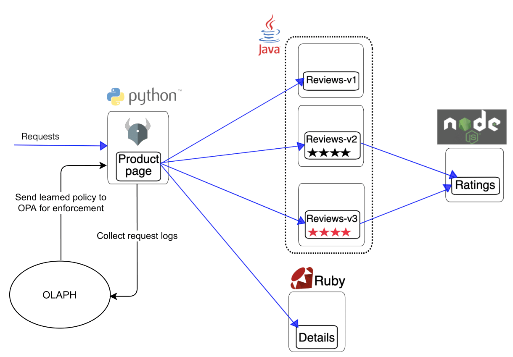
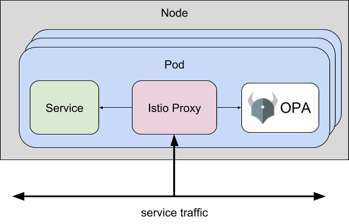
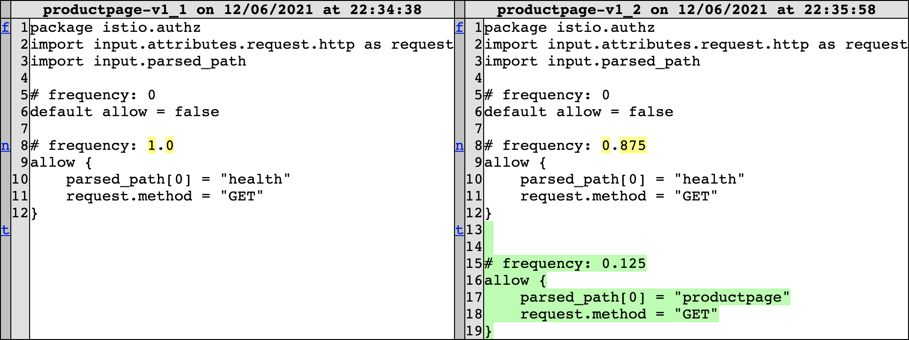
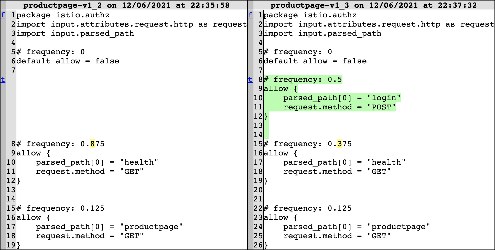
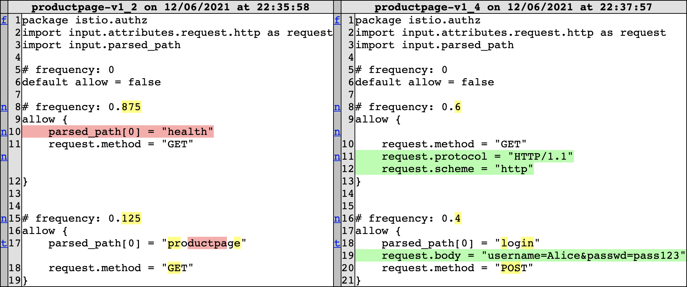
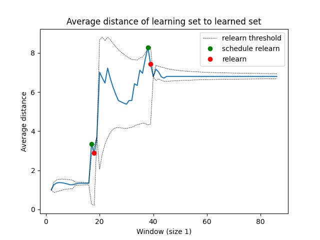

Olaph Docs
Table of Contents
1. Active Monitor

Figure 1: OLAPH active monitor integration for a Book info application. The image is adapted from the Istio service mesh documentation bookinfo_application_2021.
In this demo, the OLAPH user journey is demonstrated through learning access control policies for the Product page microservice in the Book info application, shown in Figure 1, which is running in a Kubernetes cluster. The Open Policy Agent (OPA) policy engine is running in the same Kubernetes pod as the Product page service and it enforces access control policies on incoming requests using information from the Istio service mesh, as shown in Figure 2. OLAPH collects requests logs from the Product page microservice and sends the learned policies back to OPA for enforcement. The user, who is the developer of the Book info application, monitors the policy differences that are produced from new interactions with the app and decides whether to enforce the currently learned policy, or to relearn it with adjustments to OLAPH's learning parameters.

Figure 2: OPA Istio plugin architecture OPA:Envoy-Plugin
1.1. Initial Policy
OLAPH's configuration for this application is shown below in YAML format:
max_attributes: 30 max_buffer: 100 window_size: 1 g: 3 k: 2 c: 1 decay: 0.9 preferred_attributes: - "request__method(M)" - "request__body(B)" - "parsed_path(I, P)"
The maximum number of attributes are set to 30 as a precautionary limit and the maximum long-term memory buffer size is set to a high enough number such that no requests are forgotten in the demonstration. Since this is an application with a low request volume, the window size was chosen to be 1 so that OLAPH is sensitive to individual request anomalies. The values of the generalisation parameters \(g\), \(k\) and \(c\) are chosen to encourage learning rules of a short length. The decay has a large value to collect a large amount of recent requests when relearning, and due to the small overall number of requests, some preferred attributes have been specified in ASP form. Frequency metadata has also been added to the rules, which shows the proportion of the learned examples that are allowed by each rule. The rules in the policy are sorted in descending order of frequency so that changes in the frequency are flagged in the policy differences in order to detect group anomalies.
The first step is to learn an initial policy from the recent requests to the application, which is shown below (omitting the imports). Nobody has interacted with the application recently, so the only identified request in the policy is the Kubernetes health check, which is made at regular intervals to applications running in the cluster by Kubernetes node agents. The user is prompted to approve the policy, but they are not satisfied with the current policy, so they decide to wait for the next relearn before enforcing the policy.
# frequency: 0
default allow = false
# frequency: 1.0
allow {
parsed_path[0] = "health"
request.method = "GET"
}
1.2. Policy Relearning
At this point, someone requests the /productpage path in the application, which triggers a relearn and OLAPH outputs the policy difference shown in Figure 3. The user sees that the application access has been represented in the policy, so they approve the new policy, which is sent to OPA for enforcement. The landing page of the application is now accessible, which is shown in Figure 4.

Figure 3: /productpage access policy difference

Figure 4: Book info application landing page
1.3. Policy Refinement
Now the user wants to allow some access to the signed in functionality of the app. A Book info administrator, Alice, tries to log onto the app with her credentials, but is denied access by a HTTP 403 Forbidden response, since the /login path is not allowed in the policy. The denied request triggers another relearn, and results in the policy difference shown in Figure 5.

Figure 5: /login access policy difference
This one is too general for the user's liking, as they would only like Alice to have access, and not anyone who accesses the /login path. Therefore, they update the generalisation parameter \(g\) from 3 to 2 and relearn the policy, which results in the difference in Figure 6. The relearned policy combines the first two rules into a more general rule that allows read-only access to the app, and a specialised rule for Alice to login to the app. The user now approves the policy for enforcement and Alice can sign into the app. The two approved relearns since the initial policy can be seen in the incoming requests distance graph, which converges to a confident final policy, as shown in Figure 7.

Figure 6: /login access less general policy difference

Figure 7: Book info app requests distance graph